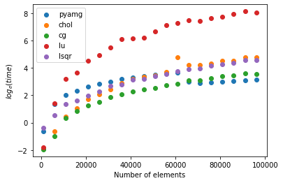

Implicit Interpolators#
The aim of implicit modelling is to find a function which represents the distance away from a reference geological horizon. There is no known analytical solution for this problem which means that they need to be approximated from the observations that are provided. We can approximate the implicit function using a weighted combination of basis functions:
Geological observations including the location of contacts and orientation of stratigraphy can be converted into mathematical expressions:
Observations constraining the value of the scalar field
Observations constraining an form surface or interface between stratigraphic units
Observations constraining the magnitude of the gradient norm of the scalar field
Observations constraining a vector to be orthogonal to the scalar field
**To solve the implicit system there needs to be a minimum of two different value observations, or a value observation and a gradient normal constraint. **
LoopStructural has two types of interpolation algorithms that can be used. 1. Discrete interpolation where the implicit function is approximated by basis functions on a predefined support 2. Data supported interpolation where the implicit function is approximated using basis functions located on the data points
Discrete Interpolation#
There are two approaches that can be used for discrete interpolation. The first approach, Piecewise Linear Interpolation, uses a linear function on a tetrahedral mesh, in LoopStructural a tetrahedral mesh is generated from a catesian grid. This means that the tetrahdral mesh is limited to object geometries that can be stored on a regular grid.
The basis of the piece wise linear interpolation algorithm is the linear tetrahedron where the property within the tetrahdron is interpolated using a linear function:
\[\phi (x,y,z) = a + bx + cy + dz\]This can be expressed by the values at the nodes (0-3):
\[\begin{split}\begin{split} \phi_0 = a + bx_0 + cy_0 + dz_0 \\ \phi_1 = a + bx_1 + cy_1 + dz_1 \\ \phi_2 = a + bx_2 + cy_2 + dz_2 \\ \phi_3 = a + bx_3 + cy_3 + dz_3 \\ \end{split}\end{split}\]
The shape functions can be used to incorporate geological observations into the approximation by determining the tetrahedron that a data point is inside. The constraint type can then be represented as a linear equation for these vertices and the shape parameter of the tetrahedron.
A regularisation constraint is used to solve the implicit system. The constant gradient regularisation minimises the difference in the gradient between neighbouring tetrahdron. The regularisation constraint was first presented by Tobias Frank et al., 2007 in Computers and Geoscience. The same method has been extended by Guillaume Caumon et al., in 2013. The regularisation term is added by adding the following constraint for every pair of neighbouring tetrahedrons in the mesh.
Additional parameters can be specified to the interpolator including:
Piecewise Linear Interpolator (PLI)# Parameter
Options
cpw
Weighting of the control points default = 1.0
npw
Weighting of gradient norm control points default = 1.0
gpw
Weighting of gradient control points default = 1.0
ipw
weighting of interface constraints default = 1.0
regularisation
weighting of the regularisation constraint default = 1.0
cgw
weighting of the constant gradient regularisation
Finite Difference Interpolation#
Instead of using the P1 finite elements we represent the property using trilinear interpolation within a cubic element. The property is interpolated using the 8 vertices of a cube and a linear interpolation along each axis.
The local coordinates are determined by finding the relative location of the point within a cell:
\[\xi, \eta, \zeta\]
We use the regularisation constraints defined by Modest Ikarama which minimises the second derivative of the implicit function.
- Additional parameters can be specified to the interpolator including:
Finite Difference Interpolator (FDI)# Parameter
Options
cpw
Weighting of the control points default = 1.0
npw
Weighting of gradient norm control points default = 1.0
gpw
Weighting of gradient control points default = 1.0
ipw
weighting of interface constraints default = 1.0
regularisation
weighting of the regularisation constraint default = 1.0
operators
a dictionary of numpy arrays that can be used as masks for finite difference approximation
Solving discrete system#
The discrete interpolation problems are an over determined system of equations:
Where A is a rectangular sparse matrix and a row of A represents the nodes in the discrete support. A is over determined. We are looking to find the solution vector x, this can be done by using least squares:
There are many different algorithms that can be used for solving this problem and with different advantages and use cases. LoopStructural can be used with many different solvers and can be used with custom solvers if required. There are two main families of solvers that are available for solving sparse linear algeba: direct and iterative. Direct solvers usually try to find the inverse or pseudo inverse of the matrix.
Direct solvers used in LoopStructural are:
lu decomposition ‘using the scipy implementation’<https://docs.scipy.org/doc/scipy/reference/generated/scipy.sparse.linalg.SuperLU.html>
cholesky decomposition using sksparse library only on linux
Iterative solvers:
conjugate gradient solver - using scipy
algorithmic multigrid solver - using pyamg
lsqr - this solver uses the rectangular matrix directly, therefore does not require computing A.T A and A.T B. Uses scipy
Using an external solver:
You can also pass a function that solves
to LoopStructural if you want to use another solver by using the external keyword .
Note that when interpolating a subset of a mesh using a region, LoopStructural will fill the unused nodes in the interpolation support with nan. To return only the values that are related to the solver make sure you mask using the region.
The choice of solver is somewhat dependent on the model you are creating. If you have a small model and a relatively large amount of memory on your computer a direct solver may be the most appropriate.
If your model is large, or computer memory is a limitation an iterative solver is the best choice. However, iterative solvers can suffer from poor convergence if the matrix is poorly conditioned (this is possible when modeling irregular geometries). Solving the iterative problem can be sped up by using a preconditioner for the matrix.
In the following example the Claudius test dataset is used to test the solver time. The same dataset is used for varying number of elements from 1,000 to 100,000 at intervals of 5,000 on a computer running ubuntu with 32gb of ram and a 4 core i7 cpu.
from LoopStructural import GeologicalModel
from LoopStructural.datasets import load_claudius
import time
data, bb = load_claudius() # load data
model = GeologicalModel(bb[0,:],bb[1,:])
model.set_model_data(data)
strati = model.create_and_add_foliation('strati',nelements=1e5,solver='pyamg',interpolatortype='FDI')
results= {}
for solver in ['pyamg','chol','cg','lu','lsqr']:
results[solver] = {'nx':[],'nel':[],'time':[],'c':[]}
for nel in np.arange(1e3,1e5,5e3):
start = time.time()
strati = model.create_and_add_foliation('strati',nelements=nel,solver=solver,interpolatortype='FDI')
strati.builder.update()
results[solver]['time'].append(time.time()-start)
results[solver]['nx'].append(strati.interpolator.nx)
results[solver]['nel'].append(nel)
# optional save out the solution
# np.save('scalar_field/{}_{}.npy'.format(solver,nel),strati.interpolator.c)
The results are shown below where the time in seconds is plotted on a logscale. We can see that the direct solvers (lu, chol) are efficient for solving system with small number of elements, however increases significantly when the number of elements increases.

It is clear that when modelling a large system using an iterative solver is beneficial. The conjugate gradient solver is the default solver for LoopStructural and performs similarly to the pyamg multigrid solver. Pyamg creates a coarse interpolation problem, or series of layers of coarse problems, and solves this using either a direct or iterative solver and then uses this as a preconditioner for the conjugate gradient method for a finer solution. Both pyamg and cg have the following parameters that can be used to specify the behaviour of the solver:
With two parameters tol and atol controlling the tolerance of the
Another parameter maxiter can be used to specify the maximum number of iterations for the alorithm.
Data Supported Interpolation#
LoopStructural provides a wrapper to the SurfE c++ library developed Natural Resources Canada (Geological Survey of Canada) by Michael Hillier, Eric de Kemp, and Ernst Schetselaar for the purposes of 3D structural geological modelling particularly in sparse data environments. SurfE can be used for interpolating a GeologicalFeature in a GeologicalModel by specifying the parameter .. code-block:
interpolatortype = 'surfe'
Additional parameters can be specified to the interpolator including:
Surfe parameters# Parameter
Options
method
single_surface, Laujaunie, horizons
kernel
r3,
greedy
tuple (interface misfit, angular misfit)
poly_order
integer
radius
double, radius for kernel if it uses a shape parameter
anisotropy
boolean, whether to use global anisotropy